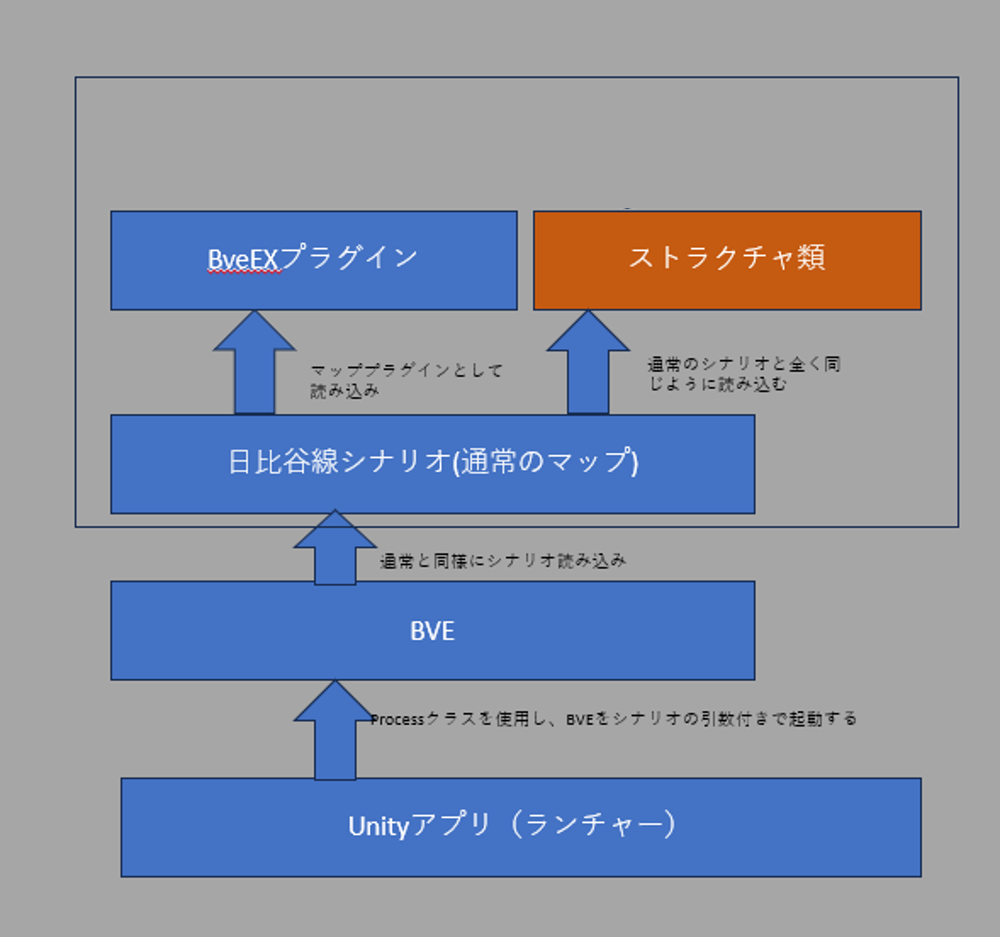
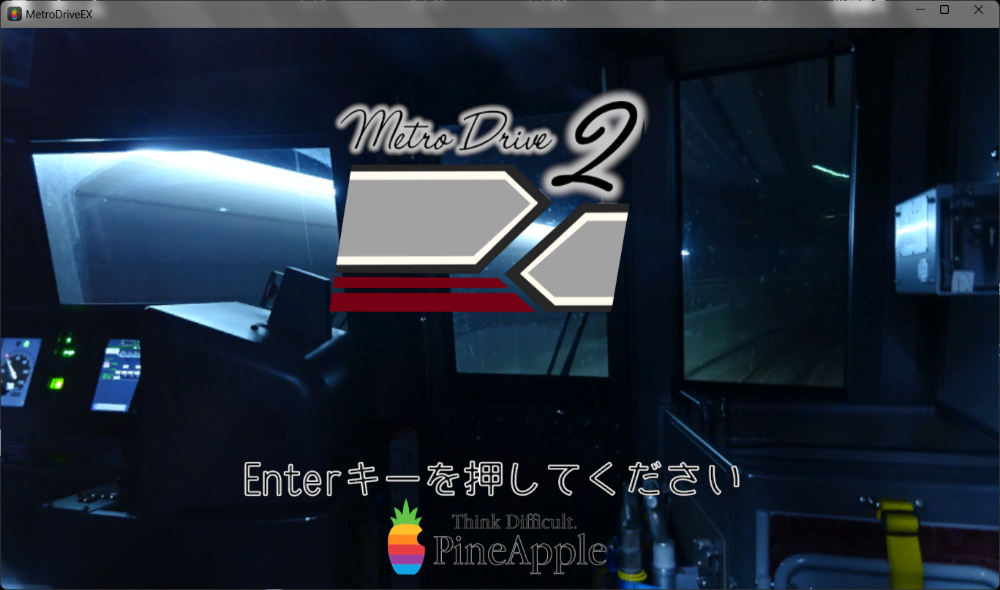
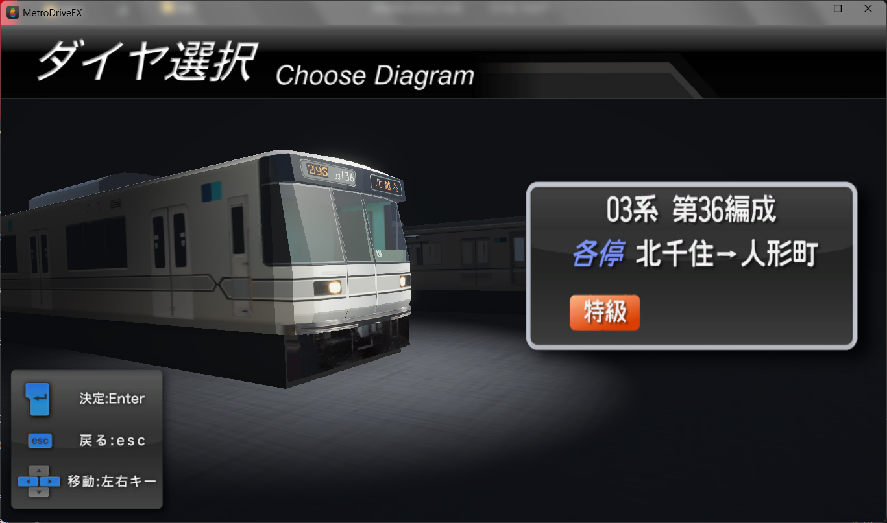

ここはUnityのBve日比谷線シナリオランチャー「MetroDriver(Launcher)」の公開場所です。
私のTwitterをご覧になっている方はよく知っていると思いますが、日比谷線はUnity製のランチャーアプリからBve並びに日比谷線シナリオを起動するものになっております。

↑こういうイメージです。
動くようにするには以下の加工が必要です。
1.MetroDriver\BVE\Scenarioに加工済み(加工方法はここ)の日比谷線データが入っているBveのScenarioフォルダを移動する又はその逆の操作をする。
2.車両データを用意し、日比谷線のシナリオファイル(whibiya◯.txt)にそのパスを記述する。
※ゾーン識別子はプログラム側から削除しますので、基本的に自力で解除する必要はありません。もしゾーン識別子関係のエラーが出たら自力でお願いします。
また、これはベータ版での公開でもない程には未完成ですので、これに関しての要望やクレームは受け付けません。ご了承ください。
スクリーンショット

